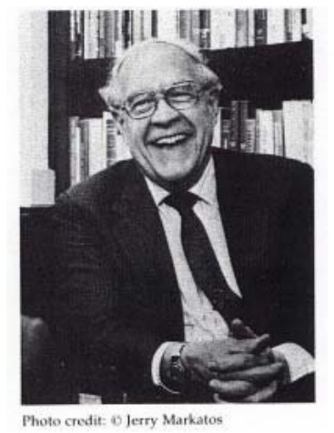

Frederick P. Brooks，Jr.是北卡罗来纳大学Kenan-Flagler商学院的计算机科学教授，北卡来罗来纳大学位于美国北卡来罗来纳州的查布尔希尔。Brooks被认为是"IBM 360系统之父"，他担任了360系统的项目经理，以及360操作系统项目设计阶段的经理。凭借在上述项目的杰出贡献，他、Bob Evans和Erich Bloch在1985年荣获了美国国家技术奖（National Medal of Techology）。早期，Brooks曾担任IBM Stretch和Harvest计算机的体系结构师。在查布尔希尔，Brooks博士创立了计算机科学系，并在1964至1984年期间担任主席。
他曾任职于美国国家科技局和国防科学技术委员会。Brooks目前的教学和研究方向是计算机体系结构、分子模型绘图和虚拟环境。